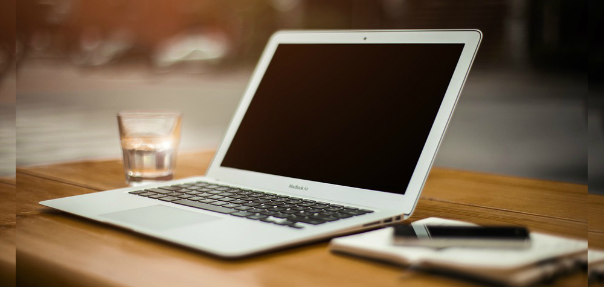

<!--
Generated template for the ComptePage page.

See http://ionicframework.com/docs/components/#navigation for more info on
Ionic pages and navigation.
-->
<ion-header>

	<ion-navbar hideBackButton="true">
		<ion-buttons left>
			<button  (click)="goToHome()" ion-button icon-only >
				<ion-icon ios="ios-arrow-back" md="md-arrow-back"></ion-icon>
			</button>
		</ion-buttons>
		<ion-title>Compte</ion-title>
	</ion-navbar>
	
</ion-header>


<ion-content padding class="bg-style no-scroll">
	{{id}}

	<ion-grid>

		<ion-row>
			<ion-col>
				<button class="button" ion-button block large round navPush="GetMeetingPage"> Prendre un rendez-vous</button>
			</ion-col>
		</ion-row>

		<ion-row>
			<ion-col>
				<button class="button" ion-button block large round navPush="MeetingPage"> Voir vos rendez-vous</button>
			</ion-col>
		</ion-row>
		<ion-row>
			<ion-col>
				<button class="button" ion-button block large round navPush="CommandesPage"> Voir vos commandes</button>
			</ion-col>
		</ion-row>
		<ion-row>
			<ion-col>
				<button class="button" ion-button block large round> Voir vos devis</button>
			</ion-col>
		</ion-row>
		<br>
		<ion-row>
			<ion-col>
				<button class="button last" (click)="deconnexion()" ion-button block round> Déconnexion</button>
			</ion-col>
		</ion-row>	


	</ion-grid>
</ion-content>
